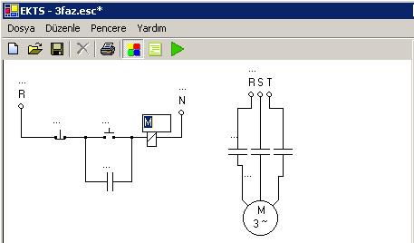
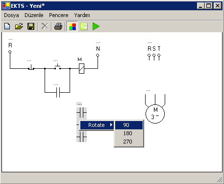
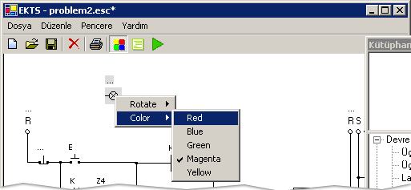

[prew] [next]
Elemanlarla Çalışmak
Çizim Paneline Eleman Eklemek
Çizim paneline eleman eklemek için:
- Kütüphane penceresinden eklemek istenilen şekil seçilir.
- Seçilen şeklin üzerine fare ile çift tıklanarak çizim paneline eklenir.
Elemanları taşımak
Elemanları taşımak için, elemanın üzerine fare imleci ile sol tuş basılı tutularak sürüklenir ve istenilen konumda bırakılır.
Elemanlara isim vermek
Elemanlara isim vermek için:
- Elemanın üzerinde bulunan etikete fare ile çift tıklayın.
- Beliren metin kutusuna, Şekil 4'de gözüktüğü gibi, elemanın ismini giriniz veya açılır kutudan ilgili ismi seçiniz.
- İsim belirlendikten sonra metin kutusu veya açılır kutunun dışarısına tıklayın.
Zaman röleleri ve kontaktörlere farklı isimler verilir. Kontakların isimleri devredeki zaman röleleri ve kontaktörlerin isimlerinden oluşan açılır kutudan belirlenir.
Zaman rölelerinin sayaç değerlerini belirlemek için yine aynı aşamalar geçerlidir.

Şekil 4 Kontaktöre İsim Verme İşlemi.
Elemanların isim etiketlerinin konumunu değiştirmek
Elemanların isim etiketlerinin konumunu değiştirmek için
- Eleman farenin sol tuşuna tıklanarak seçiniz
- Gri olarak beliren isim etiketini farenin sol tuşu basılı tutularak istenilen konuma sürükleyiniz ve bırakın.
Elemanlar taşınırken isim ve sayaç etiketleri elemanlarla beraber taşınır. Zaman rölelerinin sayaç etiketleri aynen isim etiketleri gibi taşınabilir.
Elemanları döndürmek
Elemanları döndürmek için:
- Elemanın üzende farenin sağ tuşuna tıklayın
- Açılan menüden, Şekil 5 ‘de gözüktüğü gibi, döndürmek istediğiniz açıyı seçiniz
Elemanlar döndürülürken bağlantı çizgileri yeniden oluşturulur.

Şekil 5 Elemanları Döndürmek İçin Kullanılan Açılır Menü.
Lambanın rengini belirlemek
Lambanın rengini belirlemek için:
- Lambanın üzende farenin sağ tuşuna tıklayın
- Açılan menünün Şekil 6'da gözüktüğü gibi, Renk alt menüsünden vermek istediğiniz rengi seçiniz

Şekil 6 Lambanın Rengini Belirlemek İçin Kullanılan Renk Menüsü.
Elemanı silmek
Elemanı silmek için:
- Elemanı, üzerine farenin sol tuşuna tıklayarak, seçiniz.
- Araç çubuğundan Sil
 düğmesine tıklayın veya klavyeden “Delete” tuşuna basınız.
düğmesine tıklayın veya klavyeden “Delete” tuşuna basınız.
Elemanlar silinirken kendilerine bağlı olan bağlantı çizgileri de silinir.